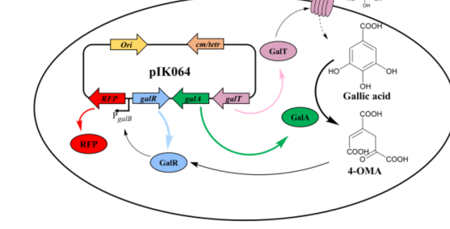

galD encodes 4-oxalomesaconate tautomerase, the second enzyme of the KT2440 gallate degradation pathway. GalD converts the keto tautomer of 4-oxalomesaconate generated by GalA into the enol tautomer used by GalB.
Definition: Catalysis of the tautomerization of 4-oxalomesaconate keto tautomer to 4-oxalomesaconate enol tautomer during gallate catabolism.
Justification: GalD has a characterized EC 5.3.2.8 substrate-level reaction in gallate degradation, but GO currently represents it only with the broad intramolecular oxidoreductase parent.
Parent term: intramolecular oxidoreductase activity, transposing C=C bonds
Supporting Evidence:
| GO Term | Evidence | Action | Reason |
|---|---|---|---|
|
GO:0016863
intramolecular oxidoreductase activity, transposing C=C bonds
|
IDA
PMID:21219457 Unravelling the gallic acid degradation pathway in bacteria:... |
ACCEPT |
Summary: This broad tautomerase/isomerase parent is the best current GO molecular-function annotation for GalD.
Reason: GalD catalyzes 4-oxalomesaconate keto-enol tautomerization; GO lacks a substrate-specific 4-oxalomesaconate tautomerase term.
Supporting Evidence:
file:PSEPK/galD/galD-uniprot.txt
Catalyzes the tautomerization of the 4-oxalomesaconic acid
file:PSEPK/galD/galD-uniprot.txt
Reaction=(1E)-4-oxobut-1-ene-1,2,4-tricarboxylate
PMID:21219457
GalD is the prototype of a new subfamily of
file:PSEPK/galD/galD-deep-research-falcon.md
**GalD** is specifically annotated as the enzyme responsible for **interconversion of 4-OMA tautomers** (OMAketo ↔ OMAenol), enabling efficient progression to the next enzymatic step.
file:PSEPK/galD/galD-deep-research-falcon.md
work on the lignin-derived aromatic catabolic network in *Sphingobium* identifies LigU as homologous to *P. putida* GalD and experimentally demonstrates OMA isomerization chemistry (1,3-allylic isomerization of OMA) using NMR, supporting that GalD-family proteins act on OMA-like intermediates in aromatic degradation pathways.
|
|
GO:0019396
gallate catabolic process
|
IDA
PMID:21219457 Unravelling the gallic acid degradation pathway in bacteria:... |
ACCEPT |
Summary: Gallate catabolic process is the correct pathway annotation for GalD.
Reason: GalD mediates the second step of the characterized KT2440 gallate degradation pathway.
Supporting Evidence:
file:PSEPK/galD/galD-uniprot.txt
Mediates the second step in gallate degradation
file:PSEPK/galD/galD-goa.tsv
GO:0019396 gallate catabolic process
PMID:21219457
tautomerization of the OMAketo generated by the GalA dioxygenase to OMAenol
file:PSEPK/galD/galD-deep-research-falcon.md
Immediately **downstream of GalA** ring cleavage and functionally coupled to **GalB** hydratase step in gallate catabolism
file:PSEPK/galD/galD-deep-research-falcon.md
**GalD’s pathway role** as a **4-OMA tautomerase** in *P. putida* KT2440 gallate catabolism is explicitly annotated and depicted in peer-reviewed 2023 literature, including gene-cluster context.
|
Q: Should GO add a substrate-specific 4-oxalomesaconate tautomerase activity term for GalD-family enzymes?
Experiment: Measure purified GalD tautomerization kinetics for OMAketo/OMAenol and test active-site mutants predicted from GalD-family conservation.
Type: enzyme kinetics assay
The research report should be a detailed narrative explaining the function, biological processes, and localization of the gene product. Citations should be given for all claims.
You should prioritize authoritative reviews and primary scientific literature when conducting research. You can supplement
this with annotations you find in gene/protein databases, but these can be outdated or inaccurate.
We are specifically interested in the primary function of the gene - for enzymes, what reaction is catalyzed, and what is the substrate specificity? For transporters, what is the substrate? For structural proteins or adapters, what is the broader structural role? For signaling molecules, what is the role in the pathway.
We are interested in where in or outside the cell the gene product carries out its function.
We are also interested in the signaling or biochemical pathways in which the gene functions. We are less interested in broad pleiotropic effects, except where these elucidate the precise role.
Include evidence where possible. We are interested in both experimental evidence as well as inference from structure, evolution, or bioinformatic analysis. Precise studies should be prioritized over high-throughput, where available.
The Pseudomonas putida KT2440 gene galD (locus PP_2513, UniProt Q88JY0) encodes 4-oxalomesaconate tautomerase (also called gallate degradation protein D; EC 5.3.2.8), a cytosolic enzyme in the gallic acid (gallate) catabolic pathway that manages interconversion among 4-oxalomesaconate (4-OMA) isomers (keto/enol) formed immediately after aromatic ring cleavage. This tautomer-management step is positioned between GalA (gallate dioxygenase) and GalB (OMAenol hydratase) and supports downstream funneling to central metabolism (via GalC aldolase). Pathway intermediates (notably 4-OMA) also serve as regulatory effectors for the LysR-family transcriptional regulator GalR, enabling synthetic biology applications such as whole-cell biosensors. (kutraite2023developmentandapplication pages 1-2, kutraite2023developmentandapplication pages 3-4, kutraite2023developmentandapplication media add12c8d)
Recent primary literature on P. putida KT2440 gallic-acid metabolism explicitly labels GalD as “4-oxalomesaconic acid (4-OMA) tautomerase” within the KT2440 gallate catabolic pathway and gene cluster (Figure 1A/B). (kutraite2023developmentandapplication pages 1-2, kutraite2023developmentandapplication media add12c8d)
The literature-described function (4-OMA tautomerase in gallate degradation) matches the UniProt description you provided for Q88JY0 (“4-oxalomesaconate tautomerase; gallate degradation protein D; PrpF family/OMA_tautomer-like domains”). Within the tool-retrieved corpus, no alternative P. putida KT2440 “galD” conflicting identity was encountered; “GalD” is consistently discussed as the 4-OMA tautomerase in this pathway context. (kutraite2023developmentandapplication pages 1-2, kutraite2023developmentandapplication media add12c8d)
Gallic acid (3,4,5-trihydroxybenzoic acid) is a plant-derived aromatic compound whose microbial degradation begins with extradiol ring cleavage. In P. putida KT2440, the first committed step is catalyzed by GalA (gallate dioxygenase) converting gallic acid into 4-oxalomesaconic acid (4-OMA), which exists as multiple tautomers/isomers (e.g., OMAketo and OMAenol). (kutraite2023developmentandapplication pages 3-4, kutraite2023developmentandapplication pages 1-2, kutraite2023developmentandapplication media add12c8d)
A tautomerase catalyzes intramolecular rearrangements (e.g., keto–enol interconversions) without net addition/removal of atoms. In the KT2440 pathway map, GalD is specifically annotated as the enzyme responsible for interconversion of 4-OMA tautomers (OMAketo ↔ OMAenol), enabling efficient progression to the next enzymatic step. (kutraite2023developmentandapplication pages 3-4, kutraite2023developmentandapplication pages 1-2, kutraite2023developmentandapplication media add12c8d)
The pathway depiction and accompanying discussion define GalB as an OMAenol hydratase (downstream of GalD), indicating that the metabolic flow depends on maintaining the correct 4-OMA isomeric form for hydration chemistry. (kutraite2023developmentandapplication pages 3-4, kutraite2023developmentandapplication pages 1-2, kutraite2023developmentandapplication media add12c8d)
Genes for uptake, ring cleavage, and lower-pathway metabolism frequently cluster together in bacterial genomes. In KT2440, the 2023 pathway/gene-cluster figure shows GalD within a conserved gal gene cluster alongside transport components (GalP, GalT) and enzymes (GalA, GalB, GalC), supporting its functional assignment in gallate catabolism. (kutraite2023developmentandapplication pages 1-2, kutraite2023developmentandapplication media add12c8d)
Assigned reaction: 4-oxalomesaconate (4-OMA) tautomerization (keto ↔ enol forms; management of OMA isomers produced after ring cleavage). (kutraite2023developmentandapplication pages 3-4, kutraite2023developmentandapplication pages 1-2, kutraite2023developmentandapplication media add12c8d)
Substrate context: 4-OMA is the immediate product of GalA-catalyzed ring cleavage of gallic acid in KT2440. (kutraite2023developmentandapplication pages 3-4, kutraite2023developmentandapplication pages 1-2)
Direct biochemical characterization of P. putida KT2440 GalD itself (purified enzyme kinetics/structure) was not present in the retrieved 2023–2025 corpus; however, mechanistic plausibility is strengthened by:
1) Pathway logic and enzyme coupling: GalB is described as OMAenol hydratase, and the authors note that removing GalD from the “reaction order” implies only OMAenol is used as GalB substrate—supporting GalD’s role in maintaining/producing the necessary tautomeric substrate pool. (kutraite2023developmentandapplication pages 3-4)
2) Homology-based reasoning: homologs annotated as 4-oxalomesaconate tautomerases exist in E. coli (b0769) and Cupriavidus necator (H16_RS33685) with ~45–48% identity to P. putida GalD, consistent with a conserved tautomerase function for this protein family. (kutraite2023developmentandapplication pages 3-4)
3) Comparative enzymology in related pathways: work on the lignin-derived aromatic catabolic network in Sphingobium identifies LigU as homologous to P. putida GalD and experimentally demonstrates OMA isomerization chemistry (1,3-allylic isomerization of OMA) using NMR, supporting that GalD-family proteins act on OMA-like intermediates in aromatic degradation pathways. (hogancamp2018functionalannotationof pages 1-5)
A concise KT2440 pathway map places the proteins as:
- Transport: GalP (outer membrane porin), GalT (inner membrane transporter)
- Ring cleavage: GalA (gallate dioxygenase): gallic acid → 4-OMA
- Tautomer management: GalD: 4-OMA keto/enol interconversion
- Hydration/cleavage: GalB (OMAenol hydratase) and GalC (CHA aldolase) producing central metabolites (pyruvate and oxaloacetate). (kutraite2023developmentandapplication pages 1-2, kutraite2023developmentandapplication media add12c8d)
Although the retrieved sources do not provide direct subcellular localization experiments for GalD, the pathway context strongly supports cytosolic localization:
- Substrates (4-OMA and subsequent ring-cleavage intermediates) are small polar metabolites produced after uptake and intracellular dioxygenase action.
- The pathway explicitly includes dedicated transporters (GalP/GalT) to bring gallic acid into the cell, after which GalA/GalD/GalB/GalC act on intracellular intermediates.
Thus, GalD is best interpreted as a soluble cytosolic enzyme in aromatic catabolism. (kutraite2023developmentandapplication pages 1-2, dias2023fromdegraderto pages 4-6, kutraite2023developmentandapplication media add12c8d)
A key 2023 development is the demonstration that gallic acid itself does not directly induce a GalR-based transcriptional response in non-native hosts; rather, activation requires GalA activity, implicating 4-OMA (produced from gallic acid by GalA) as the effector that binds GalR and drives transcription from promoter PPP_RS13150. (kutraite2023developmentandapplication pages 1-2, kutraite2023developmentandapplication pages 3-4)
This establishes an important concept: a GalD-pathway intermediate (4-OMA) is not just a metabolic intermediate, but also a signaling molecule controlling gene expression in this catabolic module. (kutraite2023developmentandapplication pages 1-2)
Analysis of the intergenic region near the GalR-controlled promoter identified motifs resembling LysR-type regulator binding sites (RBS/ABS), supporting a canonical LysR mechanism in which effector binding enables productive RNA polymerase interaction and transcriptional activation. (kutraite2023developmentandapplication pages 3-4)
Kutraite & Malys (published 2023-02-01) developed and characterized a GalR/PPP_RS13150 inducible system responding to extracellular gallic acid in P. putida KT2440 and showed that activation depends on GalA and is mediated by the 4-OMA effector. They further demonstrated portability to E. coli and C. necator by introducing galA together with galR. (kutraite2023developmentandapplication pages 1-2, kutraite2023developmentandapplication pages 3-4)
Dias et al. (online 2022-11-11, in 2023 issue) reversed P. putida KT2440’s native role as a gallate degrader into a gallic acid producer by deleting native degradation modules including galTAPR (linked to gallate uptake and the first degradation step) and pcaHG (to prevent degradation of protocatechuate), enabling gallic acid accumulation when a synthetic production operon was introduced. (dias2023fromdegraderto pages 4-6, dias2023fromdegraderto pages 1-2)
Within the tool-retrieved corpus, no 2024 primary papers specifically interrogating P. putida KT2440 GalD biochemistry were retrieved. Accordingly, GalD-specific “latest research” is best represented here by the 2023 pathway/regulatory studies that explicitly annotate GalD in vivo and highlight its coupling to downstream steps and regulation. (kutraite2023developmentandapplication pages 3-4, kutraite2023developmentandapplication pages 1-2, kutraite2023developmentandapplication media add12c8d)
A practical implementation is a whole-cell biosensor that uses GalR-mediated transcriptional activation (via 4-OMA effector generation) to drive reporter expression. The system was demonstrated for detecting and measuring gallic acid in Camellia sinensis (tea) leaf extracts, illustrating real-sample analytical utility beyond lab media. (kutraite2023developmentandapplication pages 1-2)
In E. coli, inclusion of galT (a P. putida transporter absent in E. coli) improved reporter output, consistent with GalT enhancing gallic acid uptake in the heterologous chassis—an engineering detail relevant to real-world sensor performance. (kutraite2023developmentandapplication pages 3-4)
Dias et al. report a P. putida KT2440 engineered strain (including deletions ΔgalTAPR ΔpcaHG) that produced 346.7 ± 0.004 mg/L gallic acid after 72 h in shaker assays when fed glycerol, demonstrating a quantitative, experimentally validated bioproduction outcome. (dias2023fromdegraderto pages 1-2)
The following table consolidates the functional annotation of galD in KT2440 and its immediate pathway/regulatory context.
| Item (gene/protein) | Evidence type | Catalyzed step (substrate->product names) | Pathway position | Notes on regulation/localization | Key recent sources (with year) and DOI URL |
|---|---|---|---|---|---|
| galD / PP_2513 / Q88JY0 (4-oxalomesaconate tautomerase; gallate degradation protein D) | Curated pathway; biochemical inference; sequence homology | 4-oxalomesaconate keto/enol isomer interconversion (OMAketo ↔ OMAenol; proposed OMA → CHM in older pathway descriptions) | Immediately downstream of GalA ring cleavage and functionally coupled to GalB hydratase step in gallate catabolism | Assigned in the P. putida KT2440 gal cluster; cytosolic soluble enzyme is most consistent with role in small-molecule aromatic catabolism; homologs in E. coli and C. necator share 48% and 45% identity to P. putida GalD; omission of GalD in pathway logic leaves only OMAenol available to GalB, supporting a tautomer-management role (kutraite2023developmentandapplication pages 1-2, kutraite2023developmentandapplication pages 3-4, dumalo2020dioxygenasesinthe pages 32-39, hogancamp2018functionalannotationof pages 1-5, kutraite2023developmentandapplication media add12c8d) | Kutraite & Malys 2023, ACS Synth Biol, https://doi.org/10.1021/acssynbio.2c00537; Hogancamp & Raushel 2018, Biochemistry, https://doi.org/10.1021/acs.biochem.8b00295 |
| galA (gallate dioxygenase) | Experimental genetics; curated pathway | Gallic acid (gallate) → 4-oxalomesaconate (4-OMA) | First committed catabolic step of gallate degradation | Required for activation of the GalR-based inducible system because 4-OMA, not gallic acid itself, acts as the signaling effector; deletion of galTAPR used to block gallate degradation during metabolic engineering; enzyme acts in the cytosol after substrate uptake (kutraite2023developmentandapplication pages 1-2, kutraite2023developmentandapplication pages 3-4, dias2023fromdegraderto pages 4-6, dias2023fromdegraderto pages 1-2, kutraite2023developmentandapplication media add12c8d) | Kutraite & Malys 2023, https://doi.org/10.1021/acssynbio.2c00537; Dias et al. 2023, https://doi.org/10.1007/s10123-022-00282-5 |
| galB (OMAenol hydratase / downstream hydratase) | Experimental pathway assignment; structural/biochemical literature; curated pathway | OMAenol (or downstream tautomerized 4-OMA intermediate) → hydrated product en route to CHA | Directly downstream of GalD in lower gallate pathway | Divergently transcribed adjacent to galR; proposed GalR target promoter lies upstream of galB with LysR-type RBS/ABS motifs; function is cytosolic; GalB availability helped infer that 4-OMA is the GalR effector and that GalD manages the tautomer presented to GalB (kutraite2023developmentandapplication pages 3-4, hogancamp2018functionalannotationof pages 1-5, kutraite2023developmentandapplication pages 1-2, kutraite2023developmentandapplication media add12c8d) | Kutraite & Malys 2023, https://doi.org/10.1021/acssynbio.2c00537; Hogancamp & Raushel 2018, https://doi.org/10.1021/acs.biochem.8b00295 |
| galC (CHA aldolase) | Curated pathway; pathway conservation in related systems | 4-carboxy-4-hydroxy-2-oxoadipate (CHA) → pyruvate + oxaloacetate | Terminal cleavage step feeding central metabolism | Located in the gallic acid catabolic gene cluster with galB/galD; expected cytosolic enzyme completing lower pathway carbon entry into the TCA-linked network (kutraite2023developmentandapplication pages 1-2, ookawa2025catabolicsystemof pages 1-2, kutraite2023developmentandapplication media add12c8d) | Kutraite & Malys 2023, https://doi.org/10.1021/acssynbio.2c00537; Ookawa et al. 2025, https://doi.org/10.1021/acs.jafc.5c04544 |
| galR (LysR-type transcriptional regulator) | Experimental regulatory analysis; biosensor implementation | Regulatory step, not catalytic: 4-OMA-bound GalR activates transcription from promoter PPP_RS13150 controlling gallate-catabolic expression/reporter output | Regulatory node linked to galB-adjacent promoter | 4-OMA identified as the likely effector molecule; predicted LysR RBS/ABS motifs upstream of galB-side promoter; used to build whole-cell biosensors in P. putida, E. coli, and C. necator when paired with galA; establishes that a GalD-pathway intermediate has signaling relevance (kutraite2023developmentandapplication pages 1-2, kutraite2023developmentandapplication pages 3-4, kutraite2023developmentandapplication media 7a147fd5) | Kutraite & Malys 2023, https://doi.org/10.1021/acssynbio.2c00537 |
| galT / galP (inner-membrane MFS transporter / outer-membrane porin) | Experimental genetics; transport inference from gene-cluster context; biosensor engineering | Gallic acid uptake across cell envelope (extracellular gallate → periplasm/cytosol) | Entry step upstream of GalA | galT deletion was part of the ΔgalTAPR strategy to prevent gallate degradation during production engineering; GalT improved gallic acid response in heterologous E. coli biosensors, supporting transporter function; GalP is annotated as outer-membrane porin in the same pathway map (kutraite2023developmentandapplication pages 3-4, kutraite2023developmentandapplication pages 1-2, dias2023fromdegraderto pages 4-6, dias2023fromdegraderto pages 1-2, kutraite2023developmentandapplication media add12c8d) | Kutraite & Malys 2023, https://doi.org/10.1021/acssynbio.2c00537; Dias et al. 2023, https://doi.org/10.1007/s10123-022-00282-5 |
| Pathway/application context for galD | Experimental metabolic engineering; applied synthetic biology | Blocking native degradation (ΔgalTAPR ΔpcaHG) enabled gallic acid accumulation from glycerol; reporter systems exploit 4-OMA/GalR signaling | Biotechnology context rather than single enzymatic step | Demonstrates real-world importance of correct GalD-pathway annotation: engineered P. putida produced 346.7 ± 0.004 mg/L gallic acid after 72 h, and GalR/4-OMA modules enabled extracellular gallic acid biosensing including detection in Camellia sinensis extracts (kutraite2023developmentandapplication pages 1-2, dias2023fromdegraderto pages 1-2) | Dias et al. 2023, https://doi.org/10.1007/s10123-022-00282-5; Kutraite & Malys 2023, https://doi.org/10.1021/acssynbio.2c00537 |
Table: This table summarizes the functional annotation of Pseudomonas putida KT2440 galD in its gallate catabolic context, including related enzymes, transporters, and regulator. It highlights the specific reaction assignments, pathway position, regulatory context, localization inference, and recent supporting sources with DOI links.
References
(kutraite2023developmentandapplication pages 1-2): Ingrida Kutraite and Naglis Malys. Development and application of whole-cell biosensors for the detection of gallic acid. ACS Synthetic Biology, 12:533-543, Feb 2023. URL: https://doi.org/10.1021/acssynbio.2c00537, doi:10.1021/acssynbio.2c00537. This article has 35 citations and is from a domain leading peer-reviewed journal.
(kutraite2023developmentandapplication pages 3-4): Ingrida Kutraite and Naglis Malys. Development and application of whole-cell biosensors for the detection of gallic acid. ACS Synthetic Biology, 12:533-543, Feb 2023. URL: https://doi.org/10.1021/acssynbio.2c00537, doi:10.1021/acssynbio.2c00537. This article has 35 citations and is from a domain leading peer-reviewed journal.
(kutraite2023developmentandapplication media add12c8d): Ingrida Kutraite and Naglis Malys. Development and application of whole-cell biosensors for the detection of gallic acid. ACS Synthetic Biology, 12:533-543, Feb 2023. URL: https://doi.org/10.1021/acssynbio.2c00537, doi:10.1021/acssynbio.2c00537. This article has 35 citations and is from a domain leading peer-reviewed journal.
(hogancamp2018functionalannotationof pages 1-5): Tessily N. Hogancamp and Frank M. Raushel. Functional annotation of ligu as a 1,3-allylic isomerase during the degradation of lignin in the protocatechuate 4,5-cleavage pathway from the soil bacterium sphingobium sp. syk-6. Biochemistry, 57 19:2837-2845, Apr 2018. URL: https://doi.org/10.1021/acs.biochem.8b00295, doi:10.1021/acs.biochem.8b00295. This article has 21 citations and is from a peer-reviewed journal.
(dias2023fromdegraderto pages 4-6): Felipe M. S. Dias, Raoní K. Pantoja, José Gregório C. Gomez, and Luiziana F. Silva. From degrader to producer: reversing the gallic acid metabolism of pseudomonas putida kt2440. International Microbiology, 26:243-255, Nov 2023. URL: https://doi.org/10.1007/s10123-022-00282-5, doi:10.1007/s10123-022-00282-5. This article has 7 citations and is from a peer-reviewed journal.
(dias2023fromdegraderto pages 1-2): Felipe M. S. Dias, Raoní K. Pantoja, José Gregório C. Gomez, and Luiziana F. Silva. From degrader to producer: reversing the gallic acid metabolism of pseudomonas putida kt2440. International Microbiology, 26:243-255, Nov 2023. URL: https://doi.org/10.1007/s10123-022-00282-5, doi:10.1007/s10123-022-00282-5. This article has 7 citations and is from a peer-reviewed journal.
(dumalo2020dioxygenasesinthe pages 32-39): Linda Dumalo. Dioxygenases in the catabolism of syringols in pseudomonas putida kt2440. ArXiv, Jan 2020. URL: https://doi.org/10.14288/1.0394310, doi:10.14288/1.0394310. This article has 0 citations.
(ookawa2025catabolicsystemof pages 1-2): Zen Ookawa, Yudai Higuchi, Masaya Fujita, Tomonori Sonoki, Naofumi Kamimura, and Eiji Masai. Catabolic system of syringic acid, a key intermediate of lignin-derived aromatic compounds, via a novel linear pathway in pseudomonas sp. ngc7. Journal of Agricultural and Food Chemistry, 73:18899-18913, Jul 2025. URL: https://doi.org/10.1021/acs.jafc.5c04544, doi:10.1021/acs.jafc.5c04544. This article has 6 citations and is from a highest quality peer-reviewed journal.
(kutraite2023developmentandapplication media 7a147fd5): Ingrida Kutraite and Naglis Malys. Development and application of whole-cell biosensors for the detection of gallic acid. ACS Synthetic Biology, 12:533-543, Feb 2023. URL: https://doi.org/10.1021/acssynbio.2c00537, doi:10.1021/acssynbio.2c00537. This article has 35 citations and is from a domain leading peer-reviewed journal.

id: Q88JY0
gene_symbol: galD
product_type: PROTEIN
status: DRAFT
taxon:
id: NCBITaxon:160488
label: Pseudomonas putida (strain ATCC 47054 / DSM 6125 / CFBP 8728 / NCIMB 11950 / KT2440)
description: galD encodes 4-oxalomesaconate tautomerase, the second enzyme of the KT2440 gallate degradation pathway. GalD converts the keto tautomer of 4-oxalomesaconate generated by GalA into the enol tautomer used by GalB.
existing_annotations:
- term:
id: GO:0016863
label: intramolecular oxidoreductase activity, transposing C=C bonds
evidence_type: IDA
original_reference_id: PMID:21219457
review:
summary: This broad tautomerase/isomerase parent is the best current GO molecular-function annotation for GalD.
action: ACCEPT
reason: GalD catalyzes 4-oxalomesaconate keto-enol tautomerization; GO lacks a substrate-specific 4-oxalomesaconate tautomerase term.
supported_by:
- reference_id: file:PSEPK/galD/galD-uniprot.txt
supporting_text: Catalyzes the tautomerization of the 4-oxalomesaconic acid
- reference_id: file:PSEPK/galD/galD-uniprot.txt
supporting_text: Reaction=(1E)-4-oxobut-1-ene-1,2,4-tricarboxylate
- reference_id: PMID:21219457
supporting_text: GalD is the prototype of a new subfamily of
reference_section_type: ABSTRACT
- reference_id: file:PSEPK/galD/galD-deep-research-falcon.md
supporting_text: |-
**GalD** is specifically annotated as the enzyme responsible for **interconversion of 4-OMA tautomers** (OMAketo ↔ OMAenol), enabling efficient progression to the next enzymatic step.
reference_section_type: OTHER
- reference_id: file:PSEPK/galD/galD-deep-research-falcon.md
supporting_text: |-
work on the lignin-derived aromatic catabolic network in *Sphingobium* identifies LigU as homologous to *P. putida* GalD and experimentally demonstrates OMA isomerization chemistry (1,3-allylic isomerization of OMA) using NMR, supporting that GalD-family proteins act on OMA-like intermediates in aromatic degradation pathways.
reference_section_type: OTHER
- term:
id: GO:0019396
label: gallate catabolic process
evidence_type: IDA
original_reference_id: PMID:21219457
review:
summary: Gallate catabolic process is the correct pathway annotation for GalD.
action: ACCEPT
reason: GalD mediates the second step of the characterized KT2440 gallate degradation pathway.
supported_by:
- reference_id: file:PSEPK/galD/galD-uniprot.txt
supporting_text: Mediates the second step in gallate degradation
- reference_id: file:PSEPK/galD/galD-goa.tsv
supporting_text: "GO:0019396\tgallate catabolic process"
- reference_id: PMID:21219457
supporting_text: tautomerization of the OMAketo generated by the GalA dioxygenase to OMAenol
reference_section_type: ABSTRACT
- reference_id: file:PSEPK/galD/galD-deep-research-falcon.md
supporting_text: |-
Immediately **downstream of GalA** ring cleavage and functionally coupled to **GalB** hydratase step in gallate catabolism
reference_section_type: OTHER
- reference_id: file:PSEPK/galD/galD-deep-research-falcon.md
supporting_text: |-
**GalD’s pathway role** as a **4-OMA tautomerase** in *P. putida* KT2440 gallate catabolism is explicitly annotated and depicted in peer-reviewed 2023 literature, including gene-cluster context.
reference_section_type: OTHER
references:
- id: file:PSEPK/galD/galD-uniprot.txt
title: UniProtKB reviewed entry for galD
findings:
- statement: UniProt identifies GalD as 4-oxalomesaconate tautomerase in gallate degradation.
- id: PMID:21219457
title: 'Unravelling the gallic acid degradation pathway in bacteria: the gal cluster from Pseudomonas putida'
findings:
- statement: The KT2440 gal cluster paper identifies GalD as the OMA keto-enol tautomerase.
- id: file:PSEPK/galD/galD-goa.tsv
title: QuickGO GOA annotations for galD
findings:
- statement: The fetched GOA table contains the experimental annotations reviewed for galD.
- id: file:PSEPK/galD/galD-deep-research-falcon.md
title: Falcon (Edison Scientific) deep research report for galD (P. putida KT2440)
findings:
- statement: |-
**GalD** is specifically annotated as the enzyme responsible for **interconversion of 4-OMA tautomers** (OMAketo ↔ OMAenol), enabling efficient progression to the next enzymatic step.
reference_section_type: OTHER
- statement: |-
In *P. putida* KT2440, the first committed step is catalyzed by **GalA (gallate dioxygenase)** converting gallic acid into **4-oxalomesaconic acid (4-OMA)**, which exists as multiple tautomers/isomers (e.g., **OMAketo** and **OMAenol**).
reference_section_type: OTHER
- statement: |-
Immediately **downstream of GalA** ring cleavage and functionally coupled to **GalB** hydratase step in gallate catabolism
reference_section_type: OTHER
- statement: |-
homologs annotated as 4-oxalomesaconate tautomerases exist in *E. coli* (b0769) and *Cupriavidus necator* (H16_RS33685) with ~45–48% identity to *P. putida* GalD, consistent with a conserved tautomerase function for this protein family.
reference_section_type: OTHER
- statement: |-
work on the lignin-derived aromatic catabolic network in *Sphingobium* identifies LigU as homologous to *P. putida* GalD and experimentally demonstrates OMA isomerization chemistry (1,3-allylic isomerization of OMA) using NMR, supporting that GalD-family proteins act on OMA-like intermediates in aromatic degradation pathways.
reference_section_type: OTHER
core_functions:
- description: 4-oxalomesaconate tautomerase that converts OMAketo to OMAenol in gallate catabolism.
molecular_function:
id: GO:0016863
label: intramolecular oxidoreductase activity, transposing C=C bonds
directly_involved_in:
- id: GO:0019396
label: gallate catabolic process
supported_by:
- reference_id: file:PSEPK/galD/galD-uniprot.txt
supporting_text: Catalyzes the tautomerization of the 4-oxalomesaconic acid
- reference_id: PMID:21219457
supporting_text: GalD is the prototype of a new subfamily of
reference_section_type: ABSTRACT
- reference_id: file:PSEPK/galD/galD-deep-research-falcon.md
supporting_text: |-
**GalD** is specifically annotated as the enzyme responsible for **interconversion of 4-OMA tautomers** (OMAketo ↔ OMAenol), enabling efficient progression to the next enzymatic step.
reference_section_type: OTHER
proposed_new_terms:
- proposed_name: 4-oxalomesaconate tautomerase activity
proposed_definition: Catalysis of the tautomerization of 4-oxalomesaconate keto tautomer to 4-oxalomesaconate enol tautomer during gallate catabolism.
justification: GalD has a characterized EC 5.3.2.8 substrate-level reaction in gallate degradation, but GO currently represents it only with the broad intramolecular oxidoreductase parent.
proposed_parent:
id: GO:0016863
label: intramolecular oxidoreductase activity, transposing C=C bonds
supported_by:
- reference_id: file:PSEPK/galD/galD-uniprot.txt
supporting_text: Catalyzes the tautomerization of the 4-oxalomesaconic acid
- reference_id: PMID:21219457
supporting_text: tautomerization of the OMAketo generated by the GalA dioxygenase to OMAenol
reference_section_type: ABSTRACT
suggested_questions:
- question: Should GO add a substrate-specific 4-oxalomesaconate tautomerase activity term for GalD-family enzymes?
suggested_experiments:
- description: Measure purified GalD tautomerization kinetics for OMAketo/OMAenol and test active-site mutants predicted from GalD-family conservation.
experiment_type: enzyme kinetics assay
{kind=link}